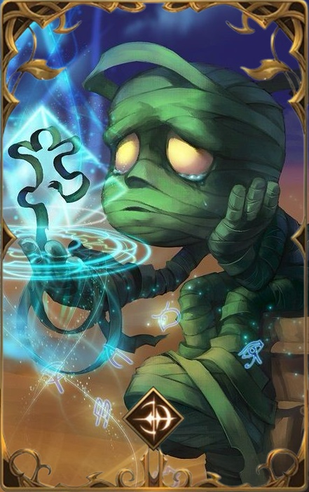

NIVEL
MAESTRIA 7

'A solidão pode ser mais solitária do que a morte.'
Amumu
Reza a lenda que Amumu é uma alma solitária e melancólica da antiga Shurima que vaga sem rumo pelo mundo em busca de um amigo. Amaldiçoado por um feitiço ancestral para permanecer só pela eternidade, seu toque traz a morte e sua afeição, a ruína. Aqueles que afirmam já tê-lo visto o descrevem como um morto-vivo franzino e coberto por faixas asquerosas. Amumu já inspirou tantos mitos, folclore e lendas contadas por muitas gerações, que já é impossível separar a verdade da ficção.
FUNÇÃO
TANQUE